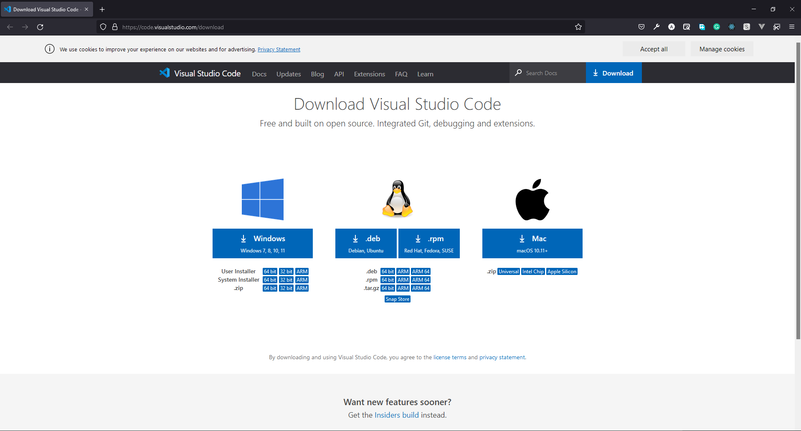
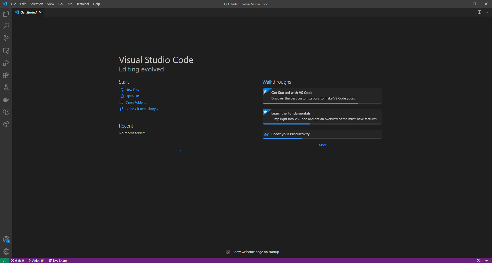
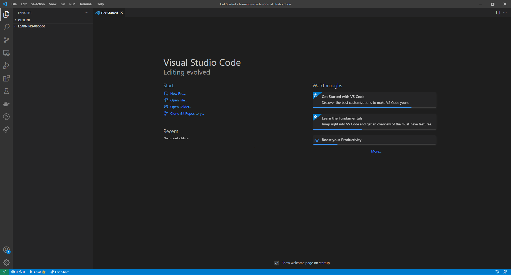
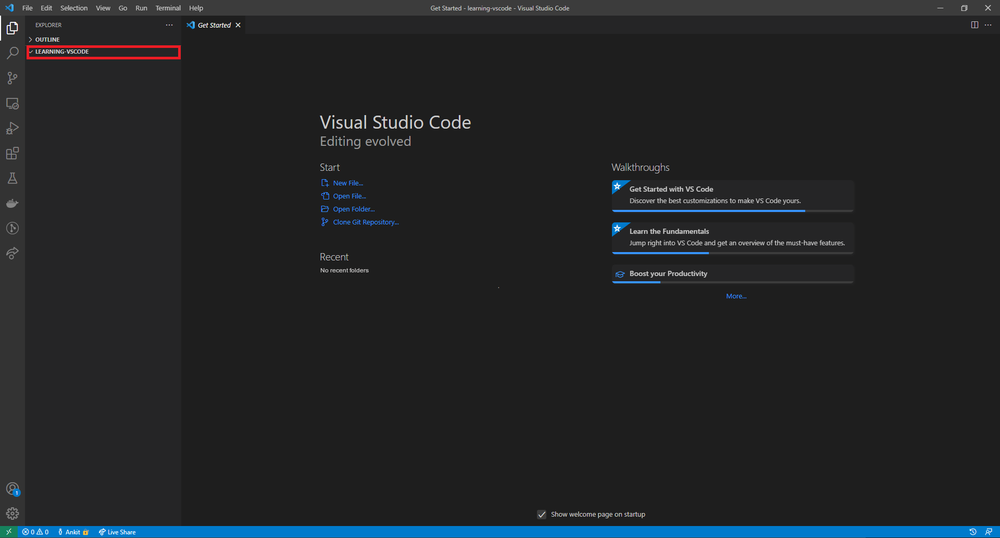
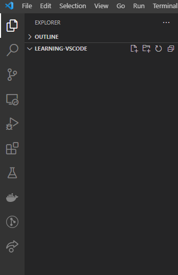
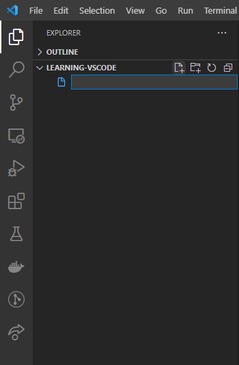
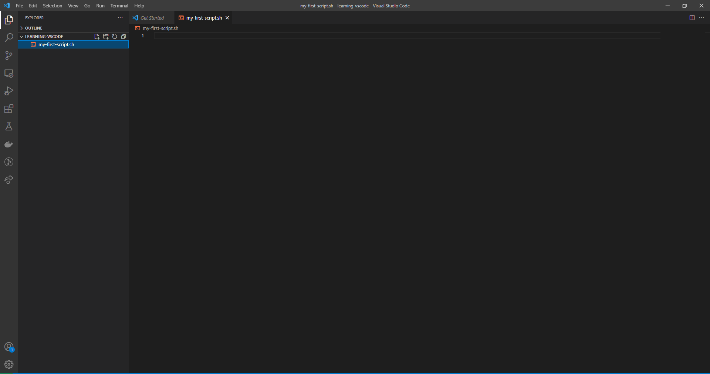
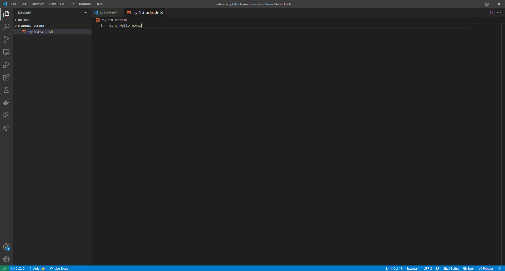
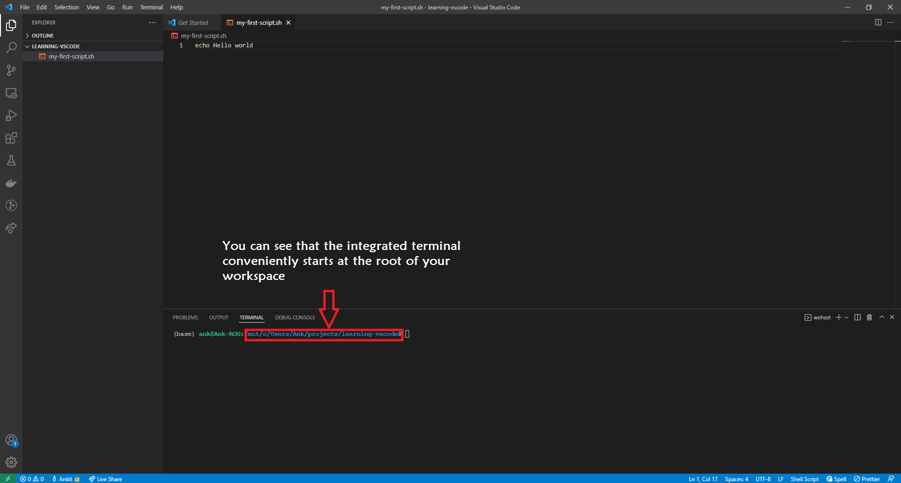

Introduction
Visual Studio Code (or VS Code) is a free, open-source code editor. It is available for Windows, Linux and macOS. This page will give you information on:
- How to download and install VS Code
- Opening a folder in VS code
- Create a new script in VS Code
- Open a Terminal in VS Code
Download
You can download VS Code from the URL: https://code.visualstudio.com/download by selecting the right platform.

VS Code download page
To download VS code click on the respective icons, depending on your operating system.
Installation
To install VS Code on
- macOS
- Open the folder where you have downloaded VS code. It will be a
.zipfile. - Extract the zip contents.
- After extracting you will see an app
Visual Studio Code.app. DragVisual Studio Code.appto theApplicationsfolder, so that you will open this using the macOS Launchpad.
- Open the folder where you have downloaded VS code. It will be a
- Windows
- Open the folder where you have downloaded VS code.
- You will find a installer (
VSCodeUserSetup-{version}.exe). Run the installer and follow the setup steps. It will take a few minutes.
- Linux
- For Debian and Ubuntu based distribution, download the
.debfile and then follow below instructions for installation.- Open up the terminal
- Move to the directory where you have downloaded the
.debfile. - Run the following command to install
sudo apt install ./<file-name>.deb # Replace <file-name> with the name of the vs-code file you have downloaded. # # If you're on an older Linux distribution, you will need to run this instead: # sudo dpkg -i <file-name>.deb # sudo apt-get install -f # Install dependencies - If you have downloaded the
.rpmfile, then follow below instructions for installation- Open up the terminal
- Move to the directory where you have downloaded the
.rpmfile. - Run the following command to install
sudo dnf install <file-name>.rpm # Replace <file-name> with the name of the vs-code file you have downloaded.
- For Debian and Ubuntu based distribution, download the
For more instructions on installing VS Code, you may visit https://code.visualstudio.com/docs/setup/setup-overview.
Open a folder in VS Code
If you open VS code for the first time it will look like the following:

No folder/directory is open in VS Code
You can open any folder/directory into VS Code in the following ways:
- On the VS Code menu bar, choose File > Open Folder….
- Then browse to the location where you have the folder/directory. Select the folder/directory (don’t double click) and then select Select Folder to open the folder into VS Code.
If a folder/directory is open then it will look like the following:

Folder/directory open in VS Code
If only a file is open on VS Code, you will see that the colour of the bottom bar is purple. If a folder/directory is, then the colour will be blue.
Create a new script in VS Code
Assuming you have opened a folder/directory in VS Code. On the left side of the VS Code window, you will see a pane called Explorer. Under Explorer, you will find the folder’s name you have opened.

VS Code Explorer Pane
If you hover over the folder’s name, you will see four icons appear.

VS Code hover over folder’s name
Starting from the left, they are for:
- Create New File within the current folder.
- Create New Folder within the current folder.
- Refresh explorer.
- Collapse explorer.
To create a new file click on the first icon (New File), and then type the name of the file with an extension of .sh and press enter.

VS Code click on new file
In the centre, you will see that a new tab is open. You will see the title of this tab is the same as the name of your file.

VS Code new file with file name of my-first-script.sh
Now you can begin your coding. Write the following code and save the file:
echo Hello WorldAfter then, you need to save this file. You can save the file by pressing ctrl (on macOS cmd) + S.

VS Code - My first bash script
Open terminal in VS Code
VS Code comes with an integrated terminal that conveniently starts at the root of your workspace (this will be clear below). There are a few different ways to open the integrated terminal:
- Using Keyboard shortcut: Press
Ctrl+ ` (ctrl + backtick character). - Using VS Code menu bar: View > Terminal.
You will see that the integrated terminal opens at the bottom.

VS Code with an integrated terminal
To learn more about the integrated terminal visit https://code.visualstudio.com/docs/editor/integrated-terminal